已通过：桶盖低挂髋侧
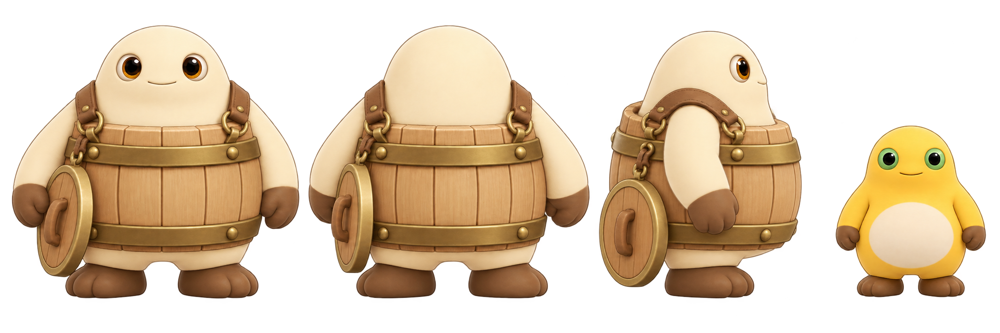
frontbackside_right桶盖低挂
延续圆润奶油色头部、木桶躯干和黄铜箍；静止轮廓和奶盾举盾姿势区分开。

frontbackside_right桶盖低挂
延续圆润奶油色头部、木桶躯干和黄铜箍；静止轮廓和奶盾举盾姿势区分开。
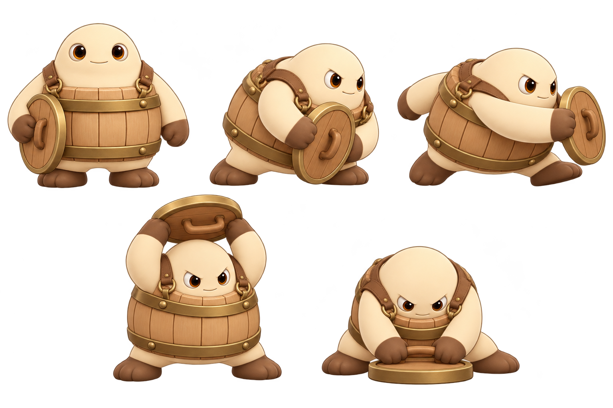
用于动作轮廓参考。本页的候选帧仍需从关键姿势扩成按帧编号的序列。
idlefront
boss_nai_tong_idle_front_00.png
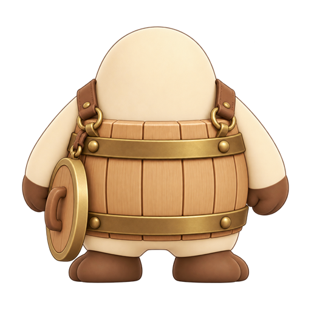
idleback
boss_nai_tong_idle_back_00.png
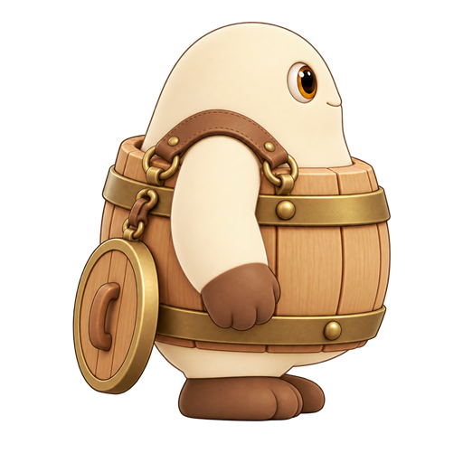
idleside_right
boss_nai_tong_idle_side_right_00.png

moveside_right
boss_nai_tong_move_side_right_00.png

charge_telegraph0.90 秒
boss_nai_tong_charge_telegraph_side_right_00.png

charge_attack修订候选
boss_nai_tong_charge_attack_side_right_00.png

lid_slam_telegraph1.05 秒
boss_nai_tong_lid_slam_telegraph_front_00.png

lid_slam_impact独立冲击 VFX
boss_nai_tong_lid_slam_impact_front_00.png

hitfront
boss_nai_tong_hit_front_00.png

phase_two1.35 秒
boss_nai_tong_phase_two_front_00.png

death静帧
boss_nai_tong_death_front_00.png
奶球生成/发射接口待工程确认。
fx_milk_shot.png
攻击起手接口待确认；接触爆点另用命中事件。
fx_melee_swing.png
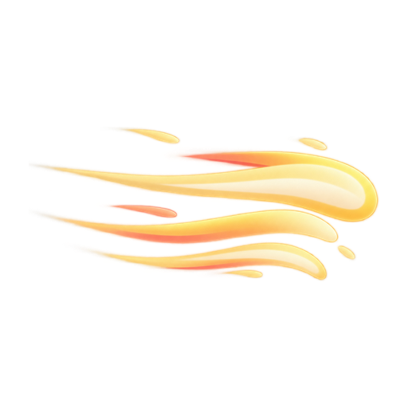
冲撞状态起止接口待确认。
fx_player_dash_trail.png
大笑起手接口待确认。
fx_laugh_burst.png
持续防御展示接口待确认，未制作循环序列。
fx_defend_guard.png
player_damaged；不可表示无敌状态下受击。
fx_player_hit.png
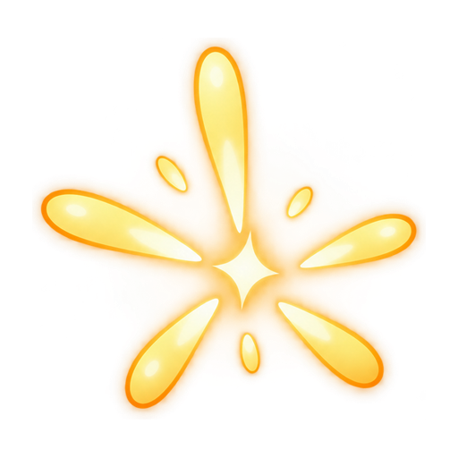
player_melee_hit；Miss 不显示。
fx_melee_impact.png
player_dash_hit。
fx_dash_impact.png
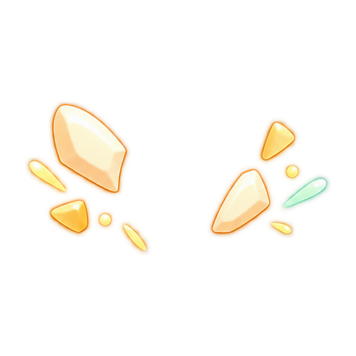
enemy_damaged。
fx_enemy_hit.png
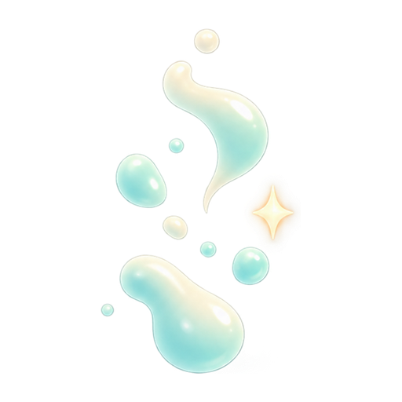
enemy_killed；只有静帧，未制作完整消散动作。
fx_enemy_death.png
冲锋开始后播放；命中/落空事件结束。蓄力预警阶段不播放。
fx_boss_charge_trail.png
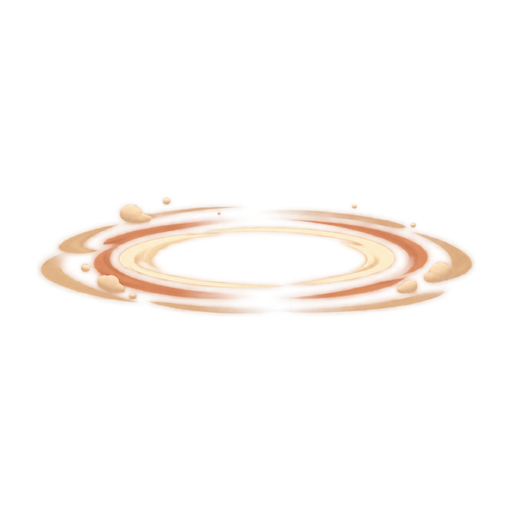
boss_lid_slam_hit 或 boss_lid_slam_missed；不表示玩家受伤。
fx_boss_lid_slam.png
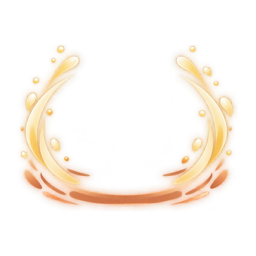
boss_phase_two；需适配 1.35 秒转换表现。
fx_boss_phase_two.png
| 触发/时序 | 表现要求 | 当前候选边界 |
|---|---|---|
boss_telegraph_charge 0.90 秒；正常/二阶段冲锋 280/340 uu | 先让角色蓄力并锁定朝向，出击后才显示方向拖尾。 | 预警、冲锋各一张右侧候选；缺全视图序列和末帧。 |
boss_telegraph_lid_slam 1.05 秒；半径 205/248 uu | 预警动作不提前画命中特效；命中和落空都可显示砸地效果。 | 仅一张正面预警与冲击姿势。 |
boss_phase_two 1.35 秒 | 阶段强化清晰，不闪屏、不挡血条和预警。 | 各一张 Boss/FX 静帧，需做时长与可读性验收。 |
| Player damage / enemy damage / confirmed melee or dash hit | 只在已确认事件播放相应受击/接触反馈。 | 命中/受击特效各单帧；特效尺寸、中心点尚待实际机位确认。 |
| 角色显示缩放 0.82 | Boss 与奶盾静态剪影区分；特效不遮角色/HUD。 | 源图未预缩放；本批尚未接入引擎开图或 PIE 预览。 |
详细文件大小、SHA-256、路径、视角、临时锚点和事件映射见 manifest v02；交付日志见 第二批交付记录；基线要求见 工程美术交接说明。